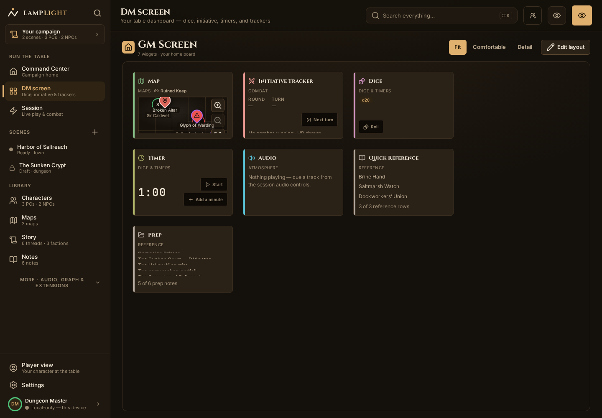
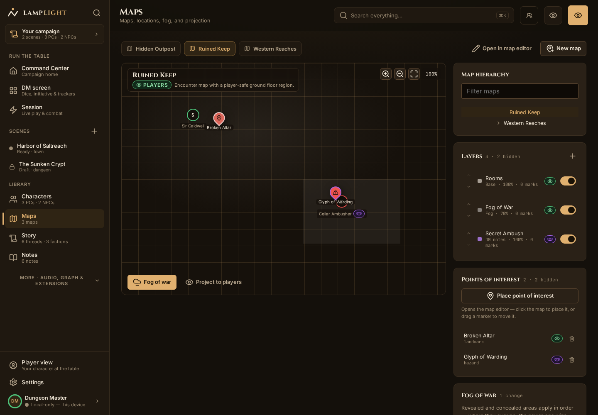

For the person running the game
Keep your campaign close.
The party takes an unexpected turn. Your notes and maps should be easy to reach. Lamplight gives you a workspace for preparing adventures and running them at the table.
Available for desktop and Android, with an installable web app. The release candidate is still in development.

Prep where you play
Link campaign notes, keep character sheets nearby and build encounters before the session. Open the tools you need when play starts.
Give the map a place at the table
Use the atlas to manage maps and points of interest. During play, reveal fog and move tokens as the party explores.

Your campaign lives on your device
Lamplight stores your vault locally. Cloud services are optional. If you connect an AI assistant, you review its proposed changes before they are applied.
Still an alpha: export a vault backup before installing an update. Read the install guide for platform limits and upgrade instructions.
Read the release notes →